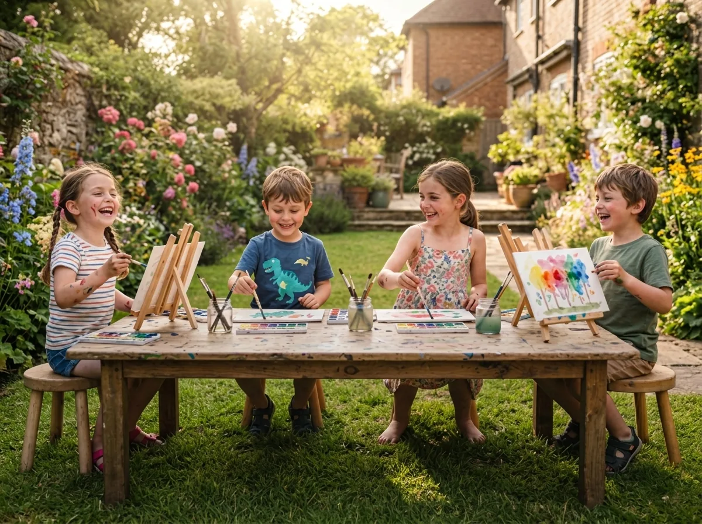

Proximidade como proposta de valor
A descoberta começa pelo condomínio selecionado, reduzindo incerteza sobre distância, local e acesso.
Um ecossistema hiperlocal que transforma espaços do condomínio em experiências infantis seguras, descobertas pela família e viabilizadas por uma operação integrada.


O desafio não era desenhar apenas um app. Era projetar confiança e liquidez entre famílias, profissionais e condomínios.
Famílias querem experiências confiáveis sem transformar cada atividade em deslocamento. Condomínios têm espaços ociosos. Profissionais precisam de demanda agrupada. A oportunidade está na orquestração.

A descoberta começa pelo condomínio selecionado, reduzindo incerteza sobre distância, local e acesso.
Verificação profissional, segurança, idade, materiais e capacidade aparecem antes da reserva.
Quando o catálogo não atende, a intenção não vira beco sem saída: alimenta a formação de uma nova turma.
A oficina pronta para acontecer , profissional, espaço, faixa etária, horário, capacidade e regra de acesso , é a unidade central do produto.
Descobre, entende o contexto, reserva e acompanha a atividade da criança.
Oferece disponibilidade e conduz turmas com demanda previamente sinalizada.
Disponibiliza espaços e mantém governança de agenda, acesso e comunicação.
Orquestra confiança, catálogo, demanda e operação entre as partes.
As personas consolidam o blueprint, os fluxos existentes e as decisões do produto. Elas orientam hipóteses de teste; não são apresentadas como participantes de pesquisa já recrutados.
Responsável por duas crianças, mora em condomínio na Zona Sul do Rio e equilibra trabalho, escola e rotina doméstica.
Educadora de artes, formada em Artes Visuais pela UFRJ, com especialização Waldorf e oito anos de experiência com crianças.
A leitura estratégica foi transformada em decisões de MVP e perguntas testáveis, mantendo fatos, apostas e dúvidas em camadas separadas.
Leitura interna e externa para orientar prioridade, não uma promessa de resultado.
O que tratamos como certeza, suposição e dúvida na fase atual.
O fluxo principal conecta descoberta e reserva; o fluxo de exceção transforma ausência de oferta em oportunidade operacional.
Proximidade, confiança e comunidade.
Login ou criação de acesso.
Dados progressivos para elegibilidade.
Pilares, busca, atividades e agenda.
Fit, local, profissional, preço e segurança.
Criança, pagamento e confirmação.
Lembrete, instruções e acompanhamento.
Tema, idade, local e preferência.
Kintaw encontra quórum e profissional.
Condomínio aprova e famílias são notificadas.
A taxonomia troca categorias escolares por verbos simples, reconhecíveis e expansíveis. Cada pilar combina intenção, cor e linguagem visual.
Artes visuais, pintura criativa, experimentação de texturas, música, modelagem e imaginação.
Mini futebol, dança, capoeira, coordenação motora, psicomotricidade e energia ao ar livre.
Pequenos cientistas, exploração da natureza no jardim, curiosidade e raciocínio investigativo.
Teatro infantil, contação de histórias, jogos dramáticos, recreação e novos amigos no prédio.
O onboarding apresenta, em sequência, proximidade, confiança e pertencimento. Três argumentos para reduzir a dúvida inicial antes do cadastro.

Transforma o endereço em uma vantagem prática: experiências sem deslocamento.

Antecipa o principal receio da família antes de apresentar o catálogo.

Mostra variedade sem recorrer a uma lista extensa de categorias.
O fluxo organiza responsável, condomínio e criança em etapas explícitas. A estrutura prepara personalização, elegibilidade e segurança , mas também introduz fricção que precisa ser testada.


A Home combina localização, quatro pilares, disponibilidade, confiança e uma saída quando o catálogo não resolve.
O condomínio ativo estabelece relevância e reduz a necessidade de filtros complexos.
Pilares, idade, ocupação, profissional e preço permitem comparar sem abrir cada item.
Vagas restantes aparecem junto à capacidade total; o objetivo é informar, não pressionar sem base.
“Pedir atividade” captura uma necessidade que ainda não encontrou oferta.
A página de atividade organiza as dúvidas que antecedem a reserva: para quem é, quando acontece, onde, com quem, o que inclui e como funciona a segurança.
Idade, duração, proposta pedagógica e benefícios ajudam a família a julgar adequação.
Data, horário, local, ocupação e materiais inclusos reduzem perguntas antes da compra.
Perfil, experiência e status de verificação dão contexto ao profissional responsável.
Investimento e CTA permanecem no fechamento da leitura longa, sem disputar atenção com o conteúdo.
“Pedir atividade” transforma uma busca frustrada em dado acionável para formar turmas e orientar aquisição de profissionais.
Descreva a necessidade da sua família. Quando houver interesse suficiente no condomínio, a Kintaw busca o profissional certo.
A família descreve atividade, idade e preferência de horário sem aprender filtros internos.
O sistema organiza os pedidos por tema, faixa etária, local e disponibilidade.
Pedidos próximos revelam oportunidade de turma , hipótese que depende de operação, consentimento e volume.
Descobrir se a família percebe esse fluxo abaixo do catálogo e entende o que acontece depois do envio.
O sistema equilibra energia infantil e leitura adulta, com cores semânticas, tipografia de alta legibilidade e componentes pensados para diferentes superfícies.
O azul ancora ações e confiança. As quatro cores dos pilares ajudam orientação sem depender apenas do texto.
Outfit dá identidade aos títulos; Plus Jakarta Sans sustenta conteúdo, formulários e dados.
Estados, hierarquia e conteúdo foram documentados para reduzir decisões repetidas entre cadastro, catálogo, reserva e operação.
Hierarquia explícita, rótulos orientados a resultado e alvos de toque consistentes.
Campos, seleções e etapas com ajuda contextual, feedback e redução de erro.
Vocabulário semântico consistente e quatro portas que combinam cor, ícone e texto.
Resumos operacionais claros para atividade, profissional, preço e comunidade.
O texto do botão descreve o resultado: reservar, confirmar ou enviar pedido.
Default, hover, pressed, focus, disabled e loading fazem parte do componente.
Datas, vagas e status usam formatos previsíveis em toda a experiência.
Mobile abaixo de 600 px; tablet até 899 px; desktop a partir de 900 px.
Antes de ampliar escopo, eu testaria as três incertezas que sustentam a proposta de valor e a operação.
Teste moderado com responsáveis percorrendo onboarding, cadastro e primeira atividade.
Entrevista + protótipo para identificar quais evidências realmente reduzem risco.
Teste A/B de posição e mensagem do fluxo “Pedir atividade” na Home.
O próximo investimento não deveria ser mais tela. Deveria ser evidência: provar que famílias completam o primeiro fluxo, que confiança é suficiente para reservar e que a manifestação de demanda gera um sinal operacional útil.
Um case de Product Design que conecta estratégia, arquitetura da experiência, interface, confiança e validação , sem confundir hipótese com resultado.